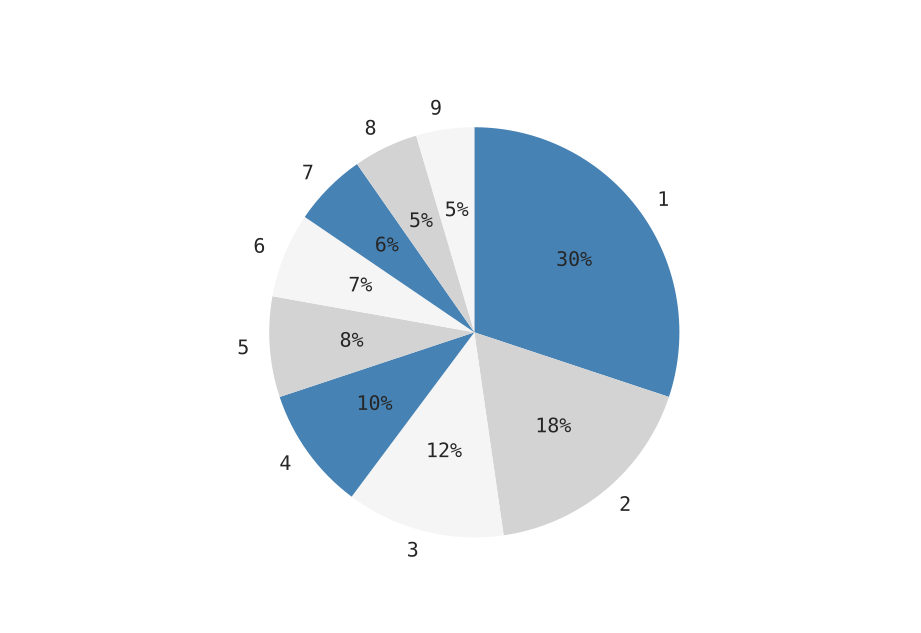
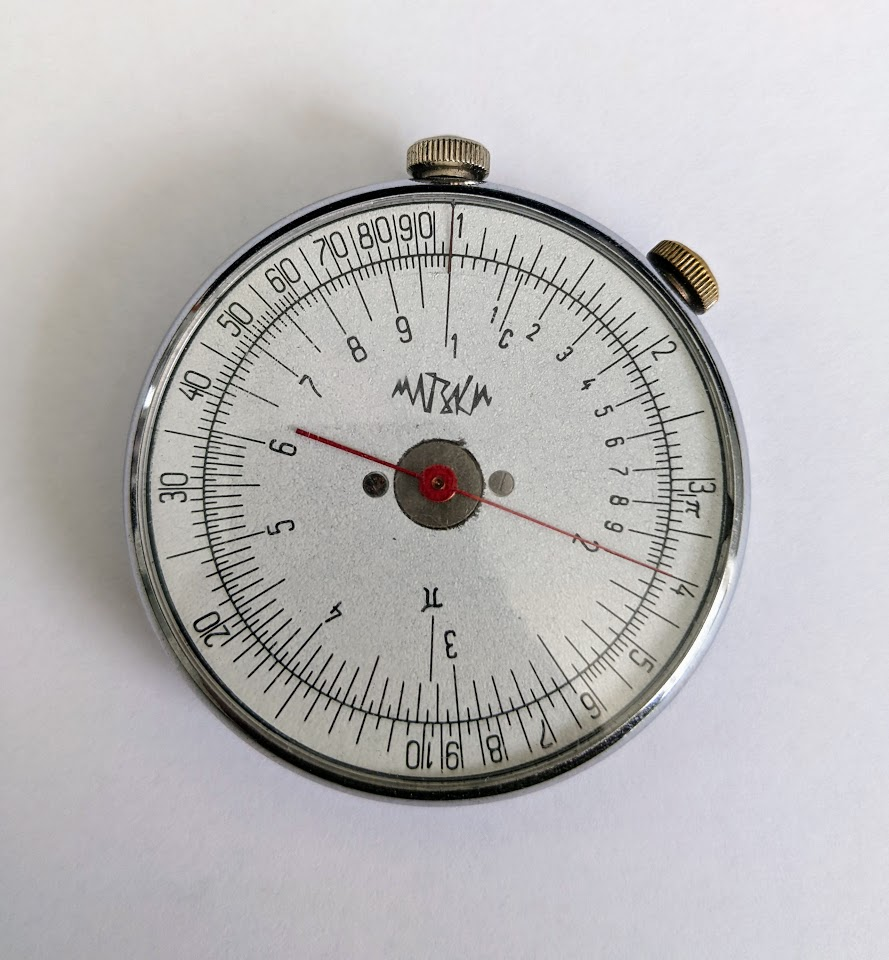

Benford's Law is the
observation that in a list of "naturally occuring numbers",
the plurality of numbers will begin with a 1.
This often catches people by surprise, but if you go and pull random numbers from a book or newspaper you can expect the leading digits to follow the following distribution:

Figure 1. The distribution of leading digits in naturall occuring numbers.
Nearly a third of all naturally occuring numbers begin with a 1. Why?
Perhaps the simplest way to see this is to realize that if there is going to be some kind of distribution for naturally occuring numbers, that distribution ought to be reparameterization independent. It shouldn't matter whether we use English or metric units. If there is going to be a universal leading digit distribution, its gotta be invariant to a change of units. Changing units is accomplished via multiplication, so whatever the universal distribution of leading digits is, it needs to be invariant to multiplication.
See it
Perhaps the easiest way to see Benford's law is to look at a Circular slide rule:1

Figure 2. An old soviet circular slide rule. The inner dial is the main dial. Notice that the digits follow Benford's law.
If you look at the inner dial, you'll notice that the digits are spaced just like our Benford's law distribution was in Figure 1. This is not an accident. Slide rules work by physically manifesting multiplication as a sort of addition. On this circular slide rule, if you add the angle a number appears at on the inner dial to the angle some other number appears at, the resulting angle will point to their product. Since slide rules only track the significand,2 circular slide rules cleverly wrap around.3
Whatever the universal leading digit distribution is, or more specifically whatever the universal distribution of significands is, provided one exists, it would have to be invariant to any multiplication. It would have to be invariant to the addition of any random angle on the circular slide rule, i.e. it would have to be circularly symmetric, i.e. it would have to uniform on the slide rule dial.
This thought process is enough to give us the distribution in Benford's law. The digits on the circular slide rule are located so that,
𝜃(𝑥)=2𝜋log10𝑥,
for the numbers from 1 to 10. This ensures that 1 is at 𝜃=0 and 10 is at 𝜃=2𝜋. It also ensures that if we try to locate the angle of a product of numbers 𝑥 and 𝑦, we can do so by simply adding their angles:4𝜃(𝑥𝑦)=2𝜋log10(𝑥𝑦)=2𝜋log10𝑥+2𝜋log10𝑦=𝜃(𝑥)+𝜃(𝑦).
Knowing how the digits are arranged, we can easily determine the fraction of the circle allotted to each one:
𝑓(𝑑)=log10(𝑑+1)−log10(𝑑)=log10(1−1𝑑).
This is the formula you'll see elsewhere. Most of the discussion surrounding Benford's law focusses on the first digit alone, but our visual argument also suggests that we can easily determine the distribution for significands themselves, not just the first digit. For instance, looking at the sliderule, we can see that its nearly as likely that a number should have "10" as its first two digits5 as it is that we'd find a naturally occuring number beginning with a 9.
We've already said that with a random multiplication being like a random spin of the circular slide rule pointer, the universal distribution of significands should just be uniform on the slide rule. Performing a change of basis, if we know the distribution 𝑝(𝜃) of angles along the circle is uniform, we can work out the distribution 𝑝(𝑥) of significands by requiring we conserve all of the probability mass:
𝑝(𝜃)𝑑𝜃=𝑝(𝑥)𝑑𝑥
combined with what we already know as the relationship between our significands and their angles: 𝜃=2𝜋log10𝑥. This allows us to transform the uniform distribution of angles 𝑝(𝜃)=12𝜋 into:
𝑝(𝑥)=1𝑥log10.
We've recovered a nice power law or "scale-free" distribution for the significands, something we could have guessed or worked out from our requirement that the distribution be invariant to scale.
We may have just gone around in a circle,6 but I hope you agree that there is something very visceral about seeing Benford's law play out on the face of the circular sliderule.